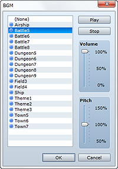
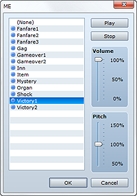
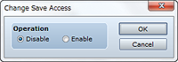
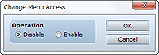
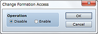
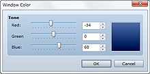
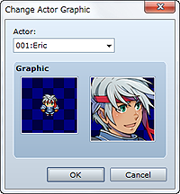
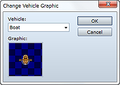

Changes the settings for the background music to play during battles. The post-change setting is active until it is changed again by this command.
Specify the BGM file to use. If you do not want to play BGM, specify None.
Specify the volume.
Specify the playback pitch between 50 and 150%. The standard pitch is 100%, and the higher the value you specify, the faster the tempo and higher the pitch.
Clicking Play plays BGM using the current settings. To halt playback, click Stop.
• Mid-battle changes will not be applied until the next battle.

Changes the settings for the music effect to play at the end of a battle. The post-change setting is active until it is changed again by this command.
Specify the ME file to use. If you do not want to play ME, specify None.
Specify the volume.
Specify the playback pitch between 50 and 150%. The standard pitch is 100%, and the higher the value you specify, the faster the tempo and higher the pitch.
Clicking Play plays ME using the current settings. To halt playback, click Stop.

Controls whether a player can save game data. The post-change setting is active until it is changed again by this command.
Select Disable to prevent saving, and Enable to allow it.

Controls whether a player can display a menu screen. The post-change setting is active until it is changed again by this command.
Select Disable to prevent menu screen display, and Enable to allow it.
Controls whether the party will encounter enemies while moving. When enabled, this command allows the random spawning of battles against enemy troops. The post-change setting is active until it is changed again by this command.
Select Disable to prevent the spawning of encounters, and Enable to allow it.

Controls whether the player can change the party member formation. The post-change setting is active until it is changed again by this command.
Select Disable to prevent formation changing, and Enable to allow it.

Changes the window color setting. The post-change setting is active until it is changed again by this command.
Use the Red, Green, and Blue slider bars (0 to 255) to specify the color to which to change. You can check the color you specified in the preview area on the right side of the dialog box.

Changes an actor's graphic. The post-change setting is active until it is changed again by this command.
Select the target actor.
Specify the post-change walking graphic (left) and face graphic (right) in the dialog boxes that open when you double-click the respective Graphic boxes. Select None if you do not want to display a graphic.

Changes a vehicle's graphic. The post-change setting is active until it is changed again by this command.
Specify the target vehicle.
Specify the post-change graphic in the dialog box that opens when you double-click the Graphic box. Select None if you do not want to display a graphic.